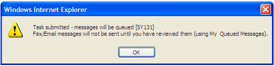
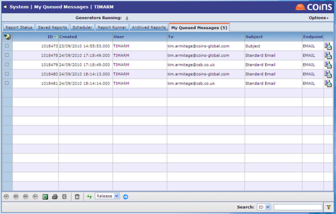
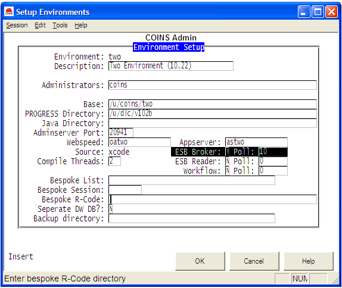

Reviewing Messages
The message review feature allows you to review faxes, emails and SMS messages generated from before they are sent, and delete them if you do not want to send them. If the message review feature is turned on, messages that are sent from a function that generates emails, faxes or SMS messages (for example: Email Certificates, Print Remittances or a mail merge function) will be automatically placed on a queue awaiting review.
If you are emailing or faxing reports or documents, you can choose whether to review them by ing or uning the Review box on the Output Options screen.
With the Review field ed, when you submit a report job any related outbound email will appear on the My Message tab for review before it is sent. You will see the following message:

With the Review field uned, when the report is generated any related fax or email will be sent immediately and will not be available for review.
To review faxes, emails and SMS messages:
- Go to Report Status.
- Click the My Messages ({RO_sin_queue}) tab.
- Make sure that the Status selector is set to Queue (Queued) and click
 .
Screenshot: My Queued Messages Screen
.
Screenshot: My Queued Messages Screen
This shows any faxes, emails or SMS messages you have sent that need to be reviewed. Note that the tab title shows the number of messages awaiting review.
- To see the content of the message, click the
 ,
,  or
or  button. The message opens in a new window. The attachments (such as the PDF or spreadsheet) are available as links.
Screenshot: Message Content
button. The message opens in a new window. The attachments (such as the PDF or spreadsheet) are available as links.
Screenshot: Message Content
- You can delete any messages you do not want to send. For example, you may decide to re-generate the messages using different message text or different selection criteria.
- To approve messages so that they are sent, select the messages, choose Release from the Choose Action list, and click
 .
.
You can view messages that you have reviewed but which have not yet been sent (or - for faxes - which are waiting for confirmation of delivery) by changing the Status selector.
To view other users' messages and messages that have been sent:
ESB Outbound Messages shows SMS, XML, fax and email messages that have been sent from .
The Status selector allows you you to show:
- Queued messages that are waiting to be reviewed by the user. These will show on the user's My Messages ({RO_sin_queue}) tab in Report Status.
- New (Unsent) messages which have been released by the user, and are waiting to be sent. If the send process is running, messages will only appear very briefly before being sent and moved on to the Done status.
- Sent (Unconfirmed) messages, which are ESB/XML messages (not emails or SMS) that require a confirmation message from the intended recipient. They remain at the Sent (Unconfirmed) status until that confirmation is received.
- Done (Complete). Messages that have been sent (and for which confirmation has been received, if required).
To set up the ESB broker:
- Run COINSadmin > Environments > Setup Environments > Select the environment
Screenshot: COINSadmin Environment Setup Screen
- On the screen above, set the ESB Broker value to Y and the Poll value to 10 (seconds)
- Press F1 to save the options and then F1 again to return to the menu.
- Run the Generate Scripts option. Running this option causes the following line to be added to the broker-start_ALL.sh script (and consequently causes the new ESB broker process to start when the db brokers are started).
/u/coins/two/bin/esbbroker_start.sh >/u/coins/two/var/diag/ESBBroker.log &2>1 &
- To initiate all the changes you have made up to now you will need to stop and re-start the webspeed agents and db brokers or alternatively leave this to be done automatically overnight.
You can set an individual user's review preference (whether the Review box is ed or not) using Users, or the user can set their own preference using User Preferences. The user can or un the box for individual reports.